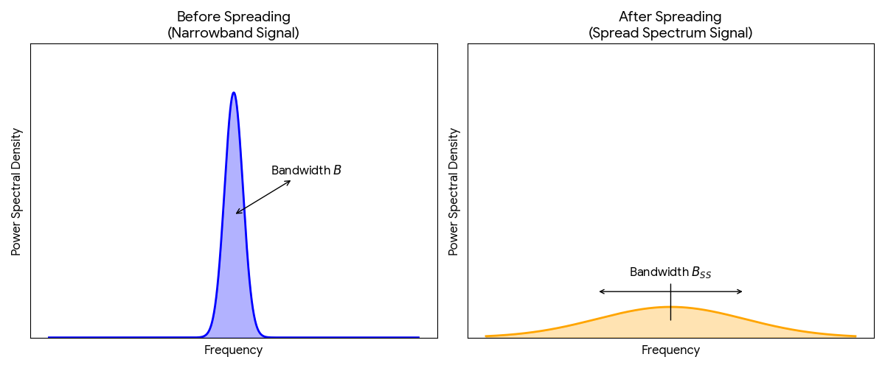

Spread Spectrum Technology
IN 3510 | Lecture 6 Comprehensive Notes
1. The Fading Landscape
Fading refers to signal fluctuations due to channel conditions. It is categorized into Large Scale (distance/obstacles) and Small Scale (interference/multipath).
Large Scale Fading
- Definition: Slow variation of received signal strength caused by distance and large obstacles (buildings, hills, terrain).
- Path Loss: Signal weakens as it travels long distances; energy spreads out → lower power at the receiver.
- Shadowing: Additional loss when obstacles block the signal. Depends on surface type and signal frequency.
- Frequency Effect: Higher frequencies have lower penetration and higher absorption → shorter range, more sensitive to obstacles.
- Note: High-frequency signals (e.g., microwave links) are line-of-sight and easily blocked but support directional communication.
Small Scale (Rayleigh) Fading
- Definition: Rapid fluctuations in signal strength and phase over short distances and short time periods. Common in almost all wireless systems.
- Fast Fading: Caused by reflections and movement of the transmitter/receiver. Creates rapid amplitude changes → leads to Inter Symbol Interference (ISI).
- Slow Fading: Caused by large obstacles blocking the signal (shadowing). Reduces SNR and is often countered using error correction and diversity techniques.
- Multipath Fading: Occurs when the signal reaches the receiver through multiple paths with different delays, causing phase distortion and ISI.
-
Types of Multipath Fading:
- Flat Fading: All frequency components affected equally; causes amplitude fluctuations.
- Selective Fading: Only certain frequencies are affected more than others. Can be reduced using OFDM.
- Diversity Techniques: Same signal is sent through different paths (time, space, frequency, or polarization) to improve reliability.
2. Multipath Delay Spread
- Multiple copies of the signal arrive at different times due to reflections.
- This timing difference can cause signal smearing and Inter-Symbol Interference (ISI).
- The power delay profile shows the average received power as a function of time delay.

Example Problem
Given:
- 0 µs: 0.01 W
- 1 µs: 0.1 W
- 2 µs: 0.1 W
- 5 µs: 1.0 W
Step 1: Total Power = 0.01 + 0.1 + 0.1 + 1 = 1.21 W
Step 2: Calculate τ
{0(0.01) + 1(0.1) + 2(0.1) + 5(1)} / 1.21 = 5.3 / 1.21 = 4.38 μs
Step 3: Calculate τ2
{0^2(0.01) + 1^2(0.1) + 2^2(0.1) + 5^2(1)} / 1.21 = 25.5 / 1.21 = 21.07 μs2
Step 4: RMS Spread
√{21.07 - (4.38)^2} = √(21.07 - 19.18) = 1.373 μs
3. Spread Spectrum (SS)
Spread Spectrum is a technique where a narrowband signal (BW = B) is intentionally spread over a much wider bandwidth (BW = Bss) using a unique code. This makes the signal more secure and resistant to interference.
Why Spread the Signal?
- Frequency-dependent fading: A narrowband signal can be wiped out during deep fades.
- Interference protection: Wideband signals are less affected by narrowband jammers.
- Security: Without the spreading code, the signal appears like noise.
Goals of Spread Spectrum
- Prevent Eavesdropping: The spreading code hides the original message.
- Prevent Jamming: Signal becomes highly resistant to intentional interference.
- Multiple Access: Different users use different codes → CDMA.
Processing Gain (N)
N = Bss / B = 10log10( Bss / B )
Higher Processing Gain → Better resistance to noise & interference.
4. Techniques: FHSS vs DSSS
Types of Spread Spectrum Techniques
1. Frequency Hopping Spread Spectrum (FHSS)
- Carrier frequency rapidly hops over many frequencies.
- Hopping pattern determined by a pseudorandom code.
- Resistant to narrowband interference.
2. Direct Sequence Spread Spectrum (DSSS)
- Original signal multiplied by a high-rate pseudorandom chip sequence.
- Spreads signal across a wide bandwidth.
- Used in CDMA and Wi-Fi (802.11b).
FHSS (Frequency Hopping)
- Signal hops across different frequencies at fixed intervals.
- Reduces probability of interception since intruder must track hops.
- Very resistant to narrowband interference and jamming.
- Simple hardware, lower complexity compared to DSSS.
- Disadvantages: Requires accurate synchronization, lower data rates than DSSS.
Advantages
- High resistance to jamming and interference.
- Low probability of interception.
- Better performance in frequency-selective fading.
Disadvantages
- Requires hop synchronization between transmitter & receiver.
- Limited data rates due to hopping.
- Not as robust as DSSS for high-speed communication.
DSSS (Direct Sequence)
- XOR the user data with a high-speed PN sequence (chips).
- The bandwidth is expanded by the chip rate.
- Base stations can use the same frequency (CDMA).
- Soft handoff possible: multiple base stations can receive & recover the signal.
- Requires precise power control to avoid the near–far problem (important in CDMA).
Advantages of DSSS
- Security: Difficult to intercept without the PN code.
- Interference resistance: Spreads signal → narrowband interference becomes negligible.
- Robustness: Excellent performance under multipath fading.
- Shared spectrum: Supports multiple users with different codes (CDMA).
- High speed: Supports higher data rates than FHSS.
Disadvantages of DSSS
- Requires large bandwidth for spreading.
- Complex and costly hardware.
- Higher power consumption — not ideal for low-power devices.
5. Practice Question (Solved)
Scenario:
A digital system uses a 32-symbol signal. Each symbol is transmitted in a 5 µsec time slot.
a) Calculate Symbol Rate (Number of symbols transmitted per second.)
Rate = 1 / Duration
Rate = 1 / (5 * 10^-6)
Rate = 200,000 symbols/sec (200 ksymbols/s)
b) Information Content per Symbol{ Information content(in bits) = log2(Num of symbols)}
Bits = log2(Num Symbols)
Bits = log2(32)
Bits = 5 bits/symbol
c) Bandwidth & Capacity
Bandwidth (Nyquist): Symbol Rate / 2
BW = 200,000 / 2 = 100,000 Hz (100 kHz)
Capacity: Symbol Rate * Information content
C = 200,000 * 5 = 1,000,000 bps (1,000 kbps)
d) With Binary Encoder
If applied to a binary encoder, each symbol becomes 5 bits. The bit rate matches the calculated capacity.
Bandwidth remains: 100 kHz
Capacity remains: 1000 kbps